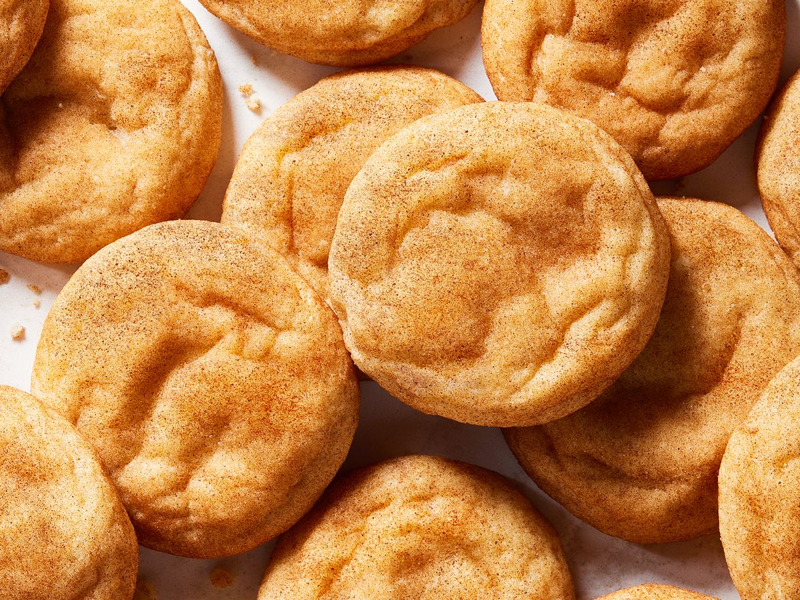

Snickerdoodle Cookies

Description
This easy snickerdoodle recipe that everyone loves is from my great-grandma!
Ingredients
- 1.5 cups white sugar
- 1 cup softened butter
- 2 large eggs
- 2.75 cups all-purpose flour
- 2 teaspoons cream of tartar
- 1 teaspoon baking soda
- 0.25 teaspoon salt
- Coating
- 2 tablespoons with white sugar
- 2 teaspoons ground cinnamon
Step-By-Step Directions
- Preheat the oven to 400 degrees F (200 degrees C).
Line a baking sheet with parchment paper or lightly grease.
- Make cookies: Beat together white sugar, butter, and eggs in a
large bowl using an electric mixer until smooth and creamy.
Combine flour, cream of tartar, baking soda, and salt in a
separate bowl; stir into creamed butter mixture until dough holds
together.
- Mix together white sugar and cinnamon in a small bowl until well combined.
- Form dough into balls (about 2 teaspoons in each ball), then roll in cinnamon-sugar
coating. Place dough balls about 2 inches apart onto the prepared baking sheet.
- Bake in the preheated oven on the center rack for 7 minutes. Allow cookies to cool on
the baking sheet for 5 minutes before transferring to a wire rack to cool completely.